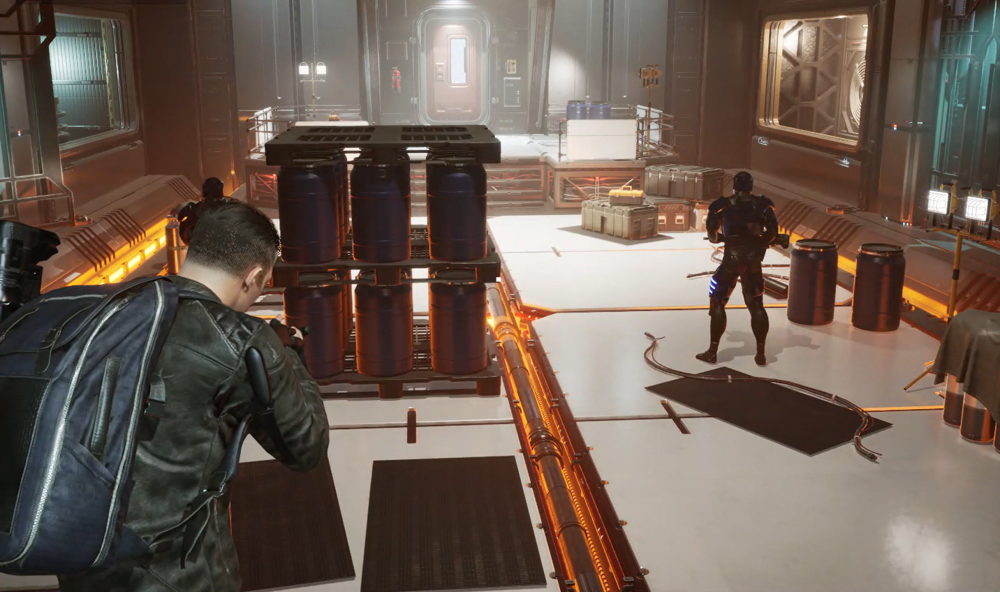
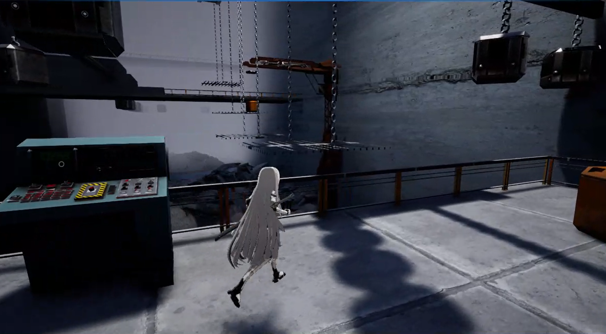

About Me
I'm a game developer specializing in gameplay and engine programming. I'm a rising senior at Carnegie Mellon University studying Information Systems, Computer Science, and Game Design. My experience consists of developing games on Unreal Engine and Unity by building the systems underneath such as AI, traversal mechanics, puzzles, and combat systems.
Projects
My projects include a collection of the gameplay systems, graphics programming, and research development I've built in Unreal Engine, Unity, and C++, from solo to team projects. You can view all projects for more.
Below are my most recent projects:

Solo third-person sci-fi shooter in C++ on Unreal Engine 5. AI behavior tree squads, a data-driven weapon system, and grappling hook traversal.

Post-apocalyptic action game built with a 12 person team in Unreal Engine 5. A hierarchical weight puzzle system and a custom crane controller.